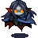

| Icon | Name | Magic School | Description |
|---|
| heal minor wounds | restoration | restores 50 hit points of person |
| create minor illusion | illusion | creates a small illusion of an existing person or item |
 | fire bolt | evocation | shoots a firebolt at the target dealing 50 damage, setting it on fire if it is flammable |
 | ray of frost | evocation | deals 50 damage to target |
 | cure poison | restoration | cures a person of poison |
 | animate | necromancy | animates a corpse and turns it into a skeleton which you control |
| cure disease | restoration | cures a person of a disease |
 | make invisible | illusion | makes target invisible for a number of turns |
 | enlarge | transmutation | makes target larger, doubling its size and making it stronger if it can fight |
 | reduce | transmutation | makes target smaller, halving its size and making it weaker if it can fight |
 | inflict wounds | necromancy | deals 40 damage to target |
 | mend | transmutation | mends and repairs a non-living item for 50 hit points |
 | cast sleep | enchantment | puts target sleep for several turns |
 | paralyze | enchantment | paralyze target for several turns |
| detect poison and disease | evocation | detects presence of poison and disease on target |
 | cast unlock | evocation | unlocks a container so that everyone has access to the container |
 | cast lock | evocation | locks a container so that only the caster has access to the container |
 | waterwalk | transmutation | allows target to walk over water for several turns |
 | cast disguise self | illusion | disguise self as an existing person or item of similar size |
 | lightning bolt | evocation | deals 50 damage to target and other targets if something conducts the electricity |
 | burden | transmutation | makes everything a person is carrying heavier |
| feather | transmutation | makes everything a person is carrying lighter |
 | disintegrate armor | evocation | damages the equipment health of the equipment worn by the target |
 | disintegrate weapon | evocation | damages the equipment health of the weapons worn by the target |
 | soultrap | necromancy | traps soul of target in a soul gem when it does, for several turns |
 | dispel magic | evocation | dispels a magic effect |
 | cast silence | evocation | silences a spellcaster so that it can't cast spells anymore |
 | detect magic | evocation | detects presence of magic on target |
 | fire trap | evocation | creates a firetrap which explodes if anyone steps on it, dealing 20 damage |
|  | lich transformation | necromancy | transforms caster into a lich |
| cast fear | enchantment | makes target fear the spell caster for several turns |
 | entangle | evocation | entangles everyone inside an area |
 | cast darkvision | transmutation | gives target darkvision which gives the ability to see in the dark |
 | trap container | evocation | traps a container so that anyone accessing the container takes damage |
 | dimension door | evocation | allows the caster teleport a short range |
 | create secret chest | evocation | turns a regular chest into a secret chest which can be summoned |
 | animal friendship | enchantment | This spell lets you convince a beast that you mean it no harm |
 | fireball | evocation | shoots a fireball at the target dealing 80 damage, setting it on fire if it is flammable |
| create major illusion | illusion | creates an illusion of an existing item |
 | sacred flame | restoration | fires sacred flame at the target dealing 80 damage |
| turn undead | restoration | turns all undead creatures around the caster, dealing 80 damage |
 | protection from fire | restoration | makes a person resistant to fire |
 | protection from ice | restoration | makes a person resistant to ice |
| protection from lightning | restoration | makes a person resistant to lightning |
 | freedom of movement | transmutation | enables a person to move and attack normally, even when under effect of magic spells that limit movement like paralysis or entangle |